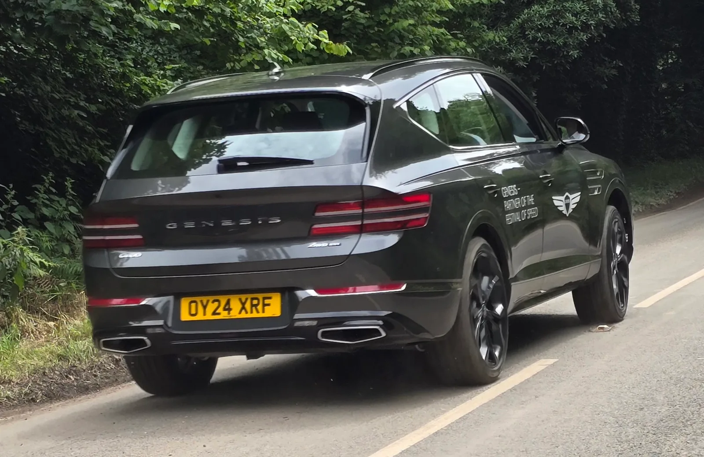

▲ 제네시스 GV80 하이브리드. 브랜드 최초의 풀 하이브리드 모델로 2026년 9월 출시된다 ⓒ 제네시스
제네시스가 브랜드 최초의 풀 하이브리드 모델을 내놓는다. GV80 하이브리드는 2026년 9월 출시를 앞두고 있으며, 사양이 이미 공개된 상태에서 정확한 가격과 정식 출시일 발표만 남겨두고 있다.
1. P1+P2 하이브리드 — 숫자로 보는 힘

▲ GV80 하이브리드 실내. 외관과 마찬가지로 기존 GV80과 큰 차이는 없다 ⓒ 제네시스
GV80 하이브리드는 2.5L 스마트스트림 가솔린 터보 엔진에 모터를 결합한 P1+P2 방식을 채택했다. 수랭식 고전압 리튬이온 배터리까지 더해 합산 출력 352마력, 합산 최대 토크 54.0kgf·m를 낸다. 기존 2.5 터보 모델과 비교하면 출력은 16%, 토크는 26% 늘어난 수치다. 정지 상태에서 시속 100km까지 도달하는 데 걸리는 시간은 7.1초다.
2. 힘은 늘었는데 연비는 25% 좋아졌다

▲ GV80 하이브리드 측면. 신규 그릴 패턴과 전용 휠 정도가 외관상 차이점이다 ⓒ 제네시스
보통 출력과 토크가 늘어나면 연비는 손해를 보기 마련이지만, GV80 하이브리드는 반대의 결과를 냈다. 제네시스 연구소 자체 측정 기준으로 복합연비(19인치 2WD 5인승 모델)가 기존 2.5 터보 대비 25% 이상 개선됐다. 정부 공인연비는 아직 공개되지 않았으며, 기존 2.5 터보 모델의 복합연비가 8.9~9.3km/L 수준인 점을 감안하면 업계에서는 11~13km/L대 안팎을 예상하는 관측이 나온다. 하이브리드 시스템이 저속·정체 구간에서 엔진 개입을 줄여주는 효과가 반영된 결과로 풀이된다.
3. 외관은 그대로 — 그릴과 휠만 다르다

▲ GV80 하이브리드. 신규 그릴 패턴 외에는 기존 GV80과 외관상 큰 차이가 없다 ⓒ 제네시스
GV80 하이브리드는 파워트레인 교체에 초점을 맞춘 모델답게, 외관 변화는 크지 않다. 신규 그릴 패턴과 전용 휠 디자인 정도가 기존 가솔린 모델과 구분되는 포인트다. 제네시스 입장에서는 완전히 새로운 디자인 언어를 도입하기보다, 검증된 GV80의 조형을 유지하면서 파워트레인만 하이브리드로 확장하는 전략을 택한 셈이다.
4. 가격 — 7,800만 원대부터, 공식 발표는 아직

▲ 기존 GV80 가솔린 모델(자료사진). 하이브리드 가격은 이 가솔린 라인업을 기준으로 책정될 전망이다 ⓒ Calreyn88(Wikimedia Commons, CC BY-SA 4.0)
정확한 판매 가격은 아직 공식 발표되지 않았다. 8월 27일 국내 배출가스·소음 인증을 마치며 9월 출시 자체는 확정됐지만, 가격표 공개는 남은 상태다. 업계에서는 7,800만 원대에서 1억 원대 사이로 추정하며, 기존 가솔린 모델(2.5 터보 6,790만 원, 3.5 터보 7,340만 원)과 비슷하거나 다소 높은 수준에서 책정될 가능성이 크다고 본다. 정확한 가격과 트림 구성은 9월 공식 출시 발표를 통해 확정된다.
5. 정리
체크포인트
- GV80 하이브리드는 제네시스 브랜드 최초의 풀 하이브리드 모델이다.
- 합산 출력 352마력으로 2.5 터보 대비 출력 16%, 토크 26% 증가했다.
- 동시에 복합연비는 25% 이상 개선됐다.
- 정확한 가격은 미정이며, 7,800만~1억 원대로 추정된다.